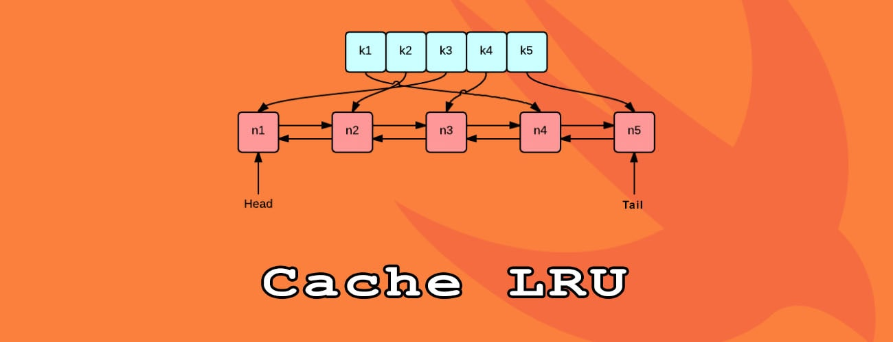
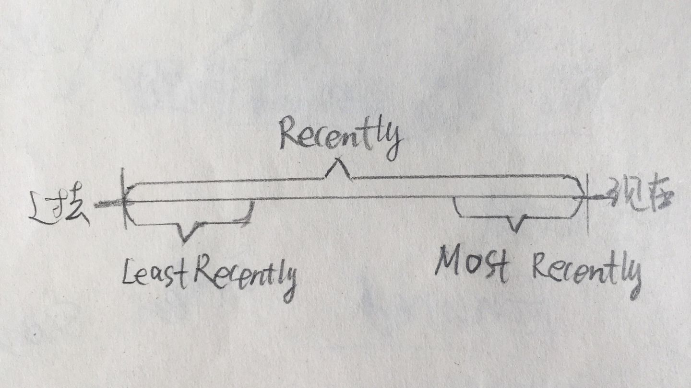
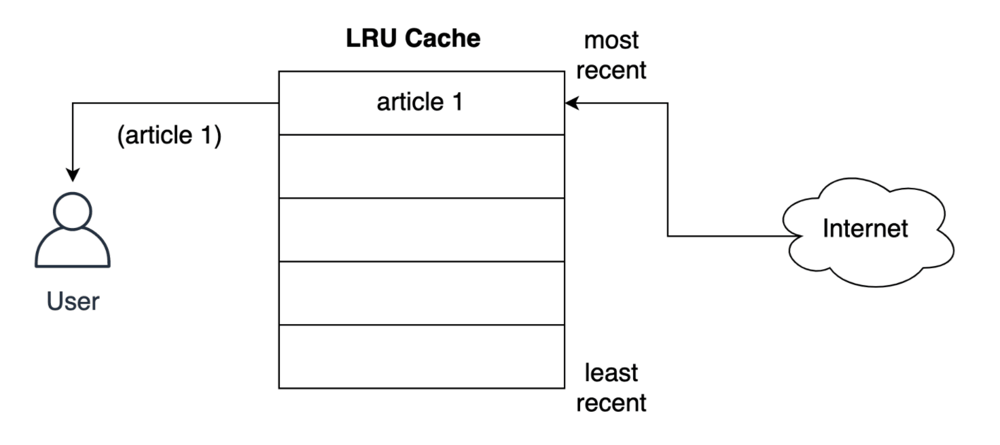
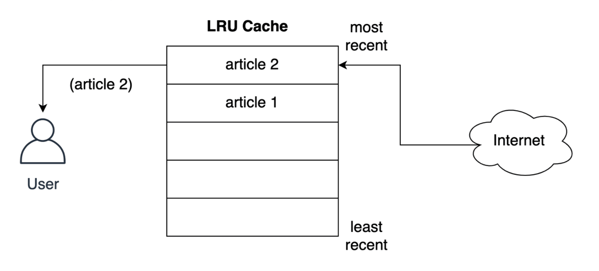
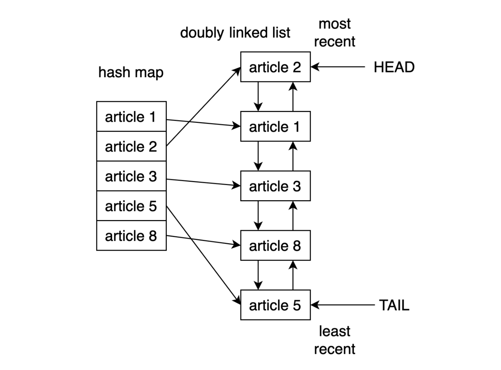
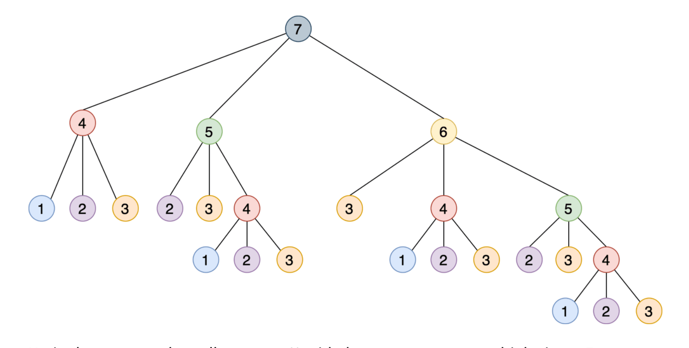

深度剖析 @lru_cache 装饰器的实现原理
有很多方法可以实现应用程序的快速响应，而使用缓存就是一种非常常见的方法。如果能够正确使用缓存的话，可以使响应变得更快且减少计算资源的额外负载。在 Python 中 functools 模块自带了 @lru_cache 这个装饰器来做缓存，其能够使用 最近最少使用(LRU)策略 来缓存函数的计算结果，这是一种简单但功能强大的技术。
- 实现
@lru_cache装饰器 - 了解
LRU策略的工作运作原理 - 使用
@lru_cache装饰器来提高性能 - 扩展
@lru_cache装饰器的功能并使其在特定时间后过期

1. 缓存及其用途
可以使用 Python 字典实现缓存解决方案
缓存是一种优化技术，我们可以在应用程序中使用它来将最近或经常使用的数据保存在内存中，通过这种方式来访问数据的速度比直接读取磁盘文件的高很多。
假设我们搭建了一个新闻聚合网站，类似于 Feedly，其获取不同来源的新闻然后聚合展示。当用户浏览新闻的时候，后台程序会将文章下载然后显示到用户屏幕上。如果不使用缓存技术的话，当用户多次切换浏览相同文章的时候，必须多次下载，效率低下且很不友好。
更好的做法就是在获取每篇文章之后，在本地进行内容的存储，比如存储在数据库中。然后，当用户下次打开同一篇文章的时候，后台程序可以从本地存储打开内容，而不是再次下载源文件，即这种技术称为缓存。
- [1] 使用 Python 字典实现缓存
以新闻聚合网站为例，我们不必每次都去下载文章内容，而是先检查缓存数据中是否存在对应的内容，只有当没有时，才会让服务器下载文章。
下方的示例程序，就是使用 Python 字典实现缓存的，将文章的 URL 作为键，并将其内容作为值。执行之后，可以看到当第二次执行 get_article 函数的时候，直接就返回了结果并没有让服务器下载。
import requests
cache = dict()
def get_article_from_server(url):
print("Fetching article from server...")
response = requests.get(url)
return response.text
def get_article(url):
print("Getting article...")
if url not in cache:
cache[url] = get_article_from_server(url)
return cache[url]
get_article("https://www.escapelife.site/love-python.html")
get_article("https://www.escapelife.site/love-python.html")# 安装依赖
$ pip install requests
# 执行脚本
$ python python_caching.py
Getting article...
Fetching article from server...
Getting article...- [2] 使用字典来做缓存的弊端
上面这种缓存实现存在一个非常大的问题，那就是字典的内容将会无限增长！即大量用户连续浏览文章的时候，后台程序将不断向字典中塞入需要存储的内容，服务器内存被挤爆，最终导致应用程序崩溃。
要解决上述这个问题，就需要有一种策略来决定哪些文章应该留在内存中，哪些文章应该被删除掉。而缓存策略其实是一些算法，它们用于管理缓存的信息，并选择丢弃哪些项以为新项腾出空间。
当然这里我们不必去实现管理缓存的算法，因为已经有前辈帮我们实现了，即轮子已经有了，看我们需要组装那种轮子到我们的代码里面。咳咳咳，以下介绍了五种常见的缓存算法：
| 缓存策略 | 英文名称 | 淘汰条件 | 在什么时候最有用 |
|---|---|---|---|
| 先进先出算法(FIFO) | First-In/First-Out |
淘汰最旧的条目 | 较新的条目最有可能被重用 |
| 后进先出算法(LIFO) | Last-In/First-Out |
淘汰最新的条目 | 较旧的条目最有可能被重用 |
| 最近最少使用算法(LRU) | Least Recently Used |
淘汰最近使用最少的条目 | 最近使用的条目最有可能被重用 |
| 最近最多使用算法(MRU) | Most Recently Used |
淘汰最近使用最多的条目 | 最近不用的条目最有可能被重用 |
| 最近最少命中算法(LFU) | Least Frequently Used |
淘汰最不经常访问的条目 | 命中率很高的条目更有可能被重用 |

看了上述五种缓存算法，是不是看到 LRU 和 LFU 的时候懵逼了，主要是通过中文对应的解释很难理解其真实的含义，看看英文的话就不难理解了。LRU 和 LFU 算法的不同之处在于：
- LRU: 基于访问时间的淘汰规则
- 根据数据的历史访问记录来进行淘汰数据
- 如果数据最近被访问过，那么将来被访问的几率也更高
- LFU: 基于访问次数的淘汰规则
- 根据数据的历史访问频率来淘汰数据
- 如果数据过去被访问多次，那么将来被访问的频率也更高
比如，以十分钟为一个节点，每分钟进行一次页面调度。当所需的页面走向为 2 1 2 4 2 3 4 时，且调页面 4 时会发生缺页中断。若按 LRU 算法的话，应换页面 1(十分钟内页面 1 最久未被使用)，但按 LFU 算法的话，应换页面 3(十分钟内页面 3 只使用了一次)。
2. 深入理解 LRU 算法
深入研究最近最少使用(LRU)缓存策略
- 查看 LRU 缓存的特点
使用 LRU 策略实现的缓存是按照使用顺序进行排序的，每次访问条目时，LRU 算法就会将其移到缓存的顶部。通过这种方式，算法可以通过查看列表的底部，快速识别出最长时间未使用的条目。

上图是用户请求第一篇文章的 LRU 策略存储记录，而下图是用户请求第二篇文章时发生的情况，第二篇文章存储到了最上层的位置。LRU 策略假定使用的对象越新，将来使用该对象的可能性就越大，因此它尝试将该对象保留在缓存中的时间最长。即如果发生条目淘汰的话，会优先淘汰第一篇文档的缓存存储记录。

- 查看 LRU 缓存的结构
在 Python 中实现 LRU 缓存的一种方法就是使用双向链表(doubly linked list)和哈希映射(hash map)。下图显示了 LRU 缓存实现逻辑结构：

双向链表的头元素将指向最近使用的条目，而其尾部将指向最近使用最少的条目。通过使用哈希映射，可以将每个条目映射到双链表中的特定位置，从而确保对缓存中的每个项的访问。这个策略非常快，访问最近最少使用的项和更新缓存的复杂度均为 O(1) 操作。
而从 Python3.2 版本开始，Python 新增了 @lru_cache 这个装饰器用于实现 LRU 策略。从此，我们可以使用这个装饰器来装饰函数并缓存其计算结果。
3. 使用 lru_cache 装饰器
在 Python 中使用
@lru_cache装饰器实现 LRU 缓存
就像我们先前实现的缓存方案一样，Python 中的 @lru_cache 装饰器存储也是使用字典来做为存储对象的。它将函数的执行结果缓存在字典的 key 里面，该 key 由对该函数的调用(包括函数的参数)组成。这就意味着这些函数的参数必须是可哈希的，装饰器才能正常工作。
- 斐波拉契数列
我们都应该知道斐波拉契数列的计算方式，常见的解决方式就是使用递归的思路。
0、1、1、2、3、5, 8、13、21、34 ……- 2 是上两项的和 ->（1+1）
- 3 是上两项的和 ->（1+2）
- 5 是上两项的和 ->（2+3）
递归的计算简洁并且直观，但是由于存在大量重复计算，实际运行效率很低，并且会占用较多的内存。但是这里并不是我们需要关注的重点，这里也是来作为演示示例而已。
# 匿名函数
fib = lambda n: 1 if n <= 1 else fib(n-1) + fib(n-2)
# 将时间复杂度降低到线性
fib = lambda n, a=1, b=1: a if n == 0 else fib(n-1, b, a+b)
# 保证了匿名函数的匿名性
fib = lambda n, fib: 1 if n <= 1 else fib(n-1, fib) + fib(n-2, fib)- 使用@lru_cache 缓存输出结果
使用 @lru_cache 装饰器来缓存的话，可以将函数调用结果存储在内存中，以便再次请求时直接返回结果。
from functools import lru_cache
@lru_cache
def fib(n):
if n==1 or n==2:
return 1
else:
return fib(n-1) + fib(n-2)- 限制@lru_cache 装饰器大小
Python 的 @lru_cache 装饰器提供了一个 maxsize 属性，该属性定义了在缓存开始淘汰旧条目之前的最大条目数。默认情况下，maxsize 设置为 128。如果将 maxsize 设置为 None 的话，则缓存将无限期增长，并且不会驱逐任何条目。
from functools import lru_cache
@lru_cache(maxsize=16)
def fib(n):
if n==1 or n==2:
return 1
else:
return fib(n-1) + fib(n-2)# 查看缓存列表
>>> print(steps_to.cache_info())
CacheInfo(hits=52, misses=30, maxsize=16, currsize=16)
4. 添加缓存过期
基于时间和空间驱逐缓存条目
假设我们要写一个脚本来监视某个网站，在网站发布关于 Python 文章的时候打印文章中总字符数。但是存在一个问题，那就是因为 @lru_cache 装饰器不限制存储的话永远不会过期，即无法获取针对于之前缓存过的文章发布的新更新。要解决此问题，可以更新缓存的实现，使其在特定时间后过期。
from functools import lru_cache, wraps
from datetime import datetime, timedelta
def timed_lru_cache(seconds: int, maxsize: int = 128):
def wrapper_cache(func):
func = lru_cache(maxsize=maxsize)(func)
func.lifetime = timedelta(seconds=seconds)
func.expiration = datetime.utcnow() + func.lifetime
@wraps(func)
def wrapped_func(*args, **kwargs):
if datetime.utcnow() >= func.expiration:
func.cache_clear()
func.expiration = datetime.utcnow() + func.lifetime
return func(*args, **kwargs)
return wrapped_func
return wrapper_cache
@timed_lru_cache(10)
def get_article_from_server(url):
...请注意，当条目过期时，此装饰器如何清除与该函数关联的整个缓存。生存期适用于整个缓存，而不适用于单个项目。此策略的更复杂实现将根据条目的单个生存期将其逐出。
在我们的程序中，如果想要实现不同缓存策略，可以查看 cachetools 这个库。该库提供了几个集合和修饰符，涵盖了一些最流行的缓存策略。
5. 官方实现方式
以下是官方
@lru_cache装饰器的实现方式，可以学习下！
- 简单理解的话，其实就是一个装饰器。
def lru_cache(maxsize=128, typed=False):
if isinstance(maxsize, int):
if maxsize < 0:
maxsize = 0
elif callable(maxsize) and isinstance(typed, bool):
user_function, maxsize = maxsize, 128
wrapper = _lru_cache_wrapper(user_function, maxsize, typed, _CacheInfo)
return update_wrapper(wrapper, user_function)
elif maxsize is not None:
raise TypeError('Expected first argument to be an integer, a callable, or None')
def decorating_function(user_function):
wrapper = _lru_cache_wrapper(user_function, maxsize, typed, _CacheInfo)
return update_wrapper(wrapper, user_function)
return decorating_function_CacheInfo = namedtuple("CacheInfo", ["hits", "misses", "maxsize", "currsize"])
def _lru_cache_wrapper(user_function, maxsize, typed, _CacheInfo):
sentinel = object() # unique object used to signal cache misses
make_key = _make_key # build a key from the function arguments
PREV, NEXT, KEY, RESULT = 0, 1, 2, 3 # names for the link fields
cache = {} # 存储也使用的字典
hits = misses = 0
full = False
cache_get = cache.get
cache_len = cache.__len__
lock = RLock() # 因为双向链表的更新不是线程安全的所以需要加锁
root = [] # 双向链表
root[:] = [root, root, None, None] # 初始化双向链表
if maxsize == 0:
def wrapper(*args, **kwds):
# No caching -- just a statistics update
nonlocal misses
misses += 1
result = user_function(*args, **kwds)
return result
elif maxsize is None:
def wrapper(*args, **kwds):
# Simple caching without ordering or size limit
nonlocal hits, misses
key = make_key(args, kwds, typed)
result = cache_get(key, sentinel)
if result is not sentinel:
hits += 1
return result
misses += 1
result = user_function(*args, **kwds)
cache[key] = result
return result
else:
def wrapper(*args, **kwds):
# Size limited caching that tracks accesses by recency
nonlocal root, hits, misses, full
key = make_key(args, kwds, typed)
with lock:
link = cache_get(key)
if link is not None:
# Move the link to the front of the circular queue
link_prev, link_next, _key, result = link
link_prev[NEXT] = link_next
link_next[PREV] = link_prev
last = root[PREV]
last[NEXT] = root[PREV] = link
link[PREV] = last
link[NEXT] = root
hits += 1
return result
misses += 1
result = user_function(*args, **kwds)
with lock:
if key in cache:
pass
elif full:
oldroot = root
oldroot[KEY] = key
oldroot[RESULT] = result
root = oldroot[NEXT]
oldkey = root[KEY]
oldresult = root[RESULT]
root[KEY] = root[RESULT] = None
del cache[oldkey]
cache[key] = oldroot
else:
last = root[PREV]
link = [last, root, key, result]
last[NEXT] = root[PREV] = cache[key] = link
full = (cache_len() >= maxsize)
return result
def cache_info():
"""Report cache statistics"""
with lock:
return _CacheInfo(hits, misses, maxsize, cache_len())
def cache_clear():
"""Clear the cache and cache statistics"""
nonlocal hits, misses, full
with lock:
cache.clear()
root[:] = [root, root, None, None]
hits = misses = 0
full = False
wrapper.cache_info = cache_info
wrapper.cache_clear = cache_clear
return wrapper6. 参考链接
送人玫瑰，手有余香！